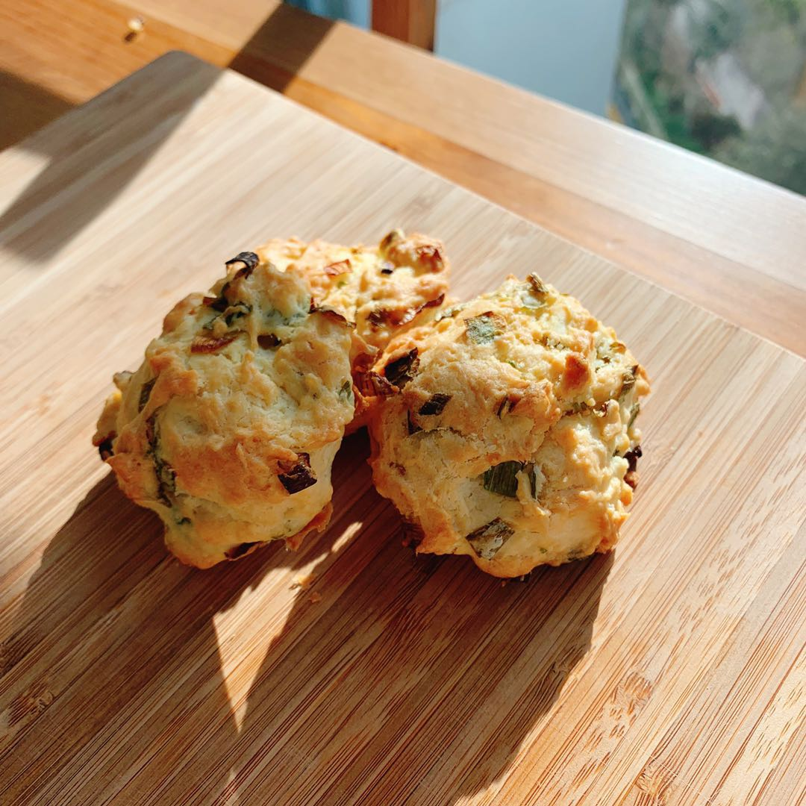

- 2 sticks of green onion
- 2g of salt
- 3g oil
- COLD unsalted butter, 60g
- 1 cup all-purpose flour
- 2g baking powder
- 1 egg
- 75g water or milk
Ingredients
- Preheat oven to 205℃.
- Chop green onions into fine bits, add in salt and oil and set it aside
- Chop the butter into cubes that are the size of a pea, we don't want melted or creamed butter. You can also pulse the butter with the flour in a food processor.
- Mix up the butter, flour, and baking powder. Do not melt the butter.
- Add in the egg and milk/water.
- Add the green onion in last.
- Shape the dough into balls and place them on a baking tray. You don't need to space them out, they will not expand horizontally or vertically.
- Bake at 205℃ for about 22 minutes.
Process
Things to read before you start making this recipe
The butter in this recipe creates tiny holes in the biscuit and makes it flaky. So make sure that all the ingredients are cold.
Do not overmix after adding in the wet ingredients. You have to be quick when shaping the biscuits and placing them on a baking tray, you don't want the dough to sit for a long time or gluten will form and the biscuits won't be as flaky.
You can send me a picture of the biscuits if you make them!
